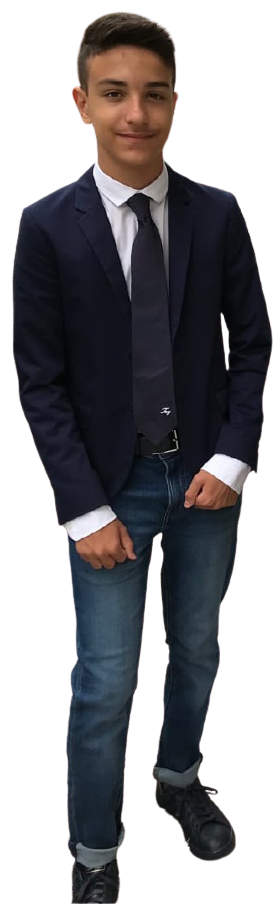

Sono un quattordicienne che vive a Bari, frequento l'istituto Marconi Hack e ho il sogno di diventare un programmatore di alto livello, nella mia vita ho realizzato diversi assets che riguardavano un gioco in particolare, ovvero Minecraft, per il resto, ho una ragazza, un gruppo di aspiranti programmatori e un computer pieno di diverse possibilità. |
 |